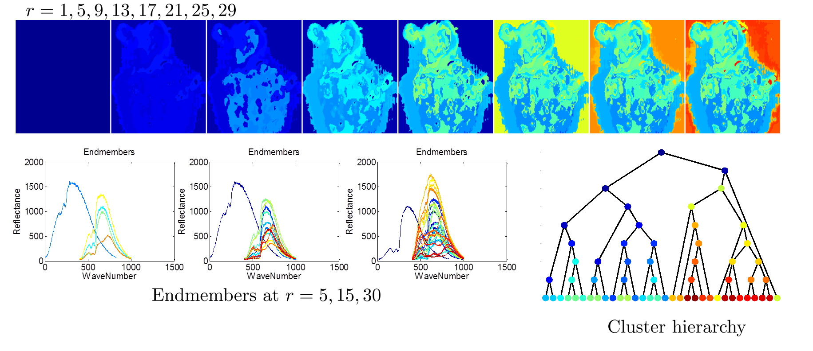
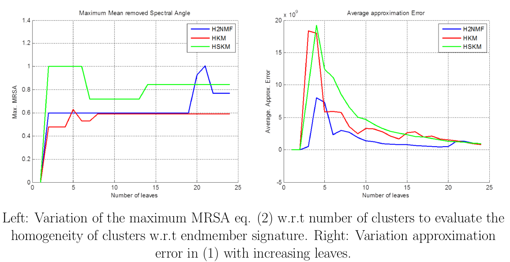

Hyperspectral imaging for tumor detection
Hyperspectral images of high spatial and spectral resolutions are employed to perform the challenging task of brain tissue characterization and subsequent segmentation for visualization of in-vivo images. Each pixel is a high-dimensional spectrum. Working on the hypothesis of pure-pixels on account of high spectral resolution, we perform unsupervised clustering by hierarchical non-negative matrix factorization to identify the pure- pixel spectral signatures of blood, brain tissues, tumor and other materials. This subspace clustering was further used to train a random forest for subsequent classification of test set images constituent of in-vivo and ex-vivo images. Unsupervised hierarchical clustering helps visualize tissue structure in in-vivo test images and provides a inter-operative tool for surgeons. The study also provides a preliminary study of the classification and sources of errors, eg specularity.
Global overview
HSI of brain tissue surface using VNIR camera (800 bands x 1000 px x 1000 px )
Manual material dictionary building by hand picked windows containing pure-pixels
Unsupervised hier. clustering (H2NMF) to obtain the best rank-1 approx. within each cluster.
Learning subspace clustering by Random Forest classifier
 |
Hierarchical segmentation by H2NMF for joint unmixing & segmentation
The H2NMF algorithms aims at using the pure-pixel assumption for non-negative matrix factorization. The algorithms performs clustering as well as spectral-unmixing iteratively. Once a flat cluster is obtained the H2NMF uses the Non-negative Least Squares (NNLS) to solve for the abundances/coefficients. The goal is to evaluate a rank-2 approximation of the input pixel-set (vectors) and find a division that is trade-off between low approximation error and a balanced 2-cluster.
The cluster to be split next shall maximize :
\[ \text{next}-k = \arg\min_\mathcal{K} \sigma_1^2(X[:,\mathcal{K}^1]) + \sigma_1^2(X[:,\mathcal{K}^2]) - \sigma_1^2(X[:,\mathcal{K}]) \]
so as to produce the steepest decrease in the approximation error. This step is repeated recursively \(r-1\) times, thus leading to \(r\)-clusters.
The subsets/clusters created are now further divided until a good rank-1 matrix approximation are achieved at the leaves. Thus the H2NMF algorithm is trying to segment the hyperspectral image to achieve the best rank-1 approximation of each segment w.r.t to its first principal component.
|
 |
MSRA
Representative pure-pixels are ones with minimal Mean removed spectral angle(MRSA) w.r.t \(u_k\)
\[ phi(\mathbf{x},\mathbf{y}) = \frac{1}{\pi} \arccos \bigg( \frac{(x - \bar{x})^T(y - \bar{y})}{\| x - \bar{x}\|^2 \| y - \bar{y} \|^2}\bigg) \in [0,1] \]
Abundances are evaluated by Non-negative least squares (NNLS).
|
 |
Preprocessing tools for hyperspectral images
Cropping to region of interest manually to reduce image size
Spectral and spatial repeatibility tests to evaluate camera quality. Ref1, Ref2
Locating specular reflections by the RX-anomaly detector
Noise estimation and camera calibration
Publications and Slides
Brain tissue discovery and classification in HSI, Université de Strasbourg, http:icube-miv.unistra.frenindex.php/Home“ target=”_blank Icube-MIV, Slides
Unsupervised clustering of hyperspectral images of brain tissues by hierarchical non-negative matrix factorization, In Proceedings of the 9th International Joint Conference on Biomedical Engineering Systems and Technologies - Vol. 2: BIOIMAGING 2016 , pages 77-84, Bangalore Ravi Kiran, Bogdan Stanciulescu and Jesus Angulo, PosterHAL
End-member extraction in hyper-spectral images for brain tumor localization, ROMOPTO 2015, B Ravi Kiran, Bogdan Stanciulescu, and Jesus Angulo, Poster
References
Learning from weakly representative data and applications in spectral image analysis link
Deep Learning for Land-cover Classification in Hyperspectral Images link
Going Deeper with Contextual CNN for Hyperspectral Image Classification pdf
Discriminative Autoencoders for Small Targets Detection 2014 pdf
Learning cross-spectral similarity measures with deep convolutional neural networks pdf